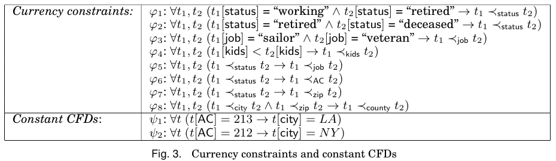

Currency Constraints
We study a new problem in conflict resolution: given a set of tuples pertaining to the same entity, it is to identify a single tuple in which each attribute has the latest and consistent value in the set. This problem is important in data integration, data cleaning and query answering. It is, however, challenging since in practice, reliable timestamps are often absent, among other things. We propose a model for conflict resolution, by specifying data currency in terms of partial currency orders and currency constraints, and by enforcing data consistency with constant conditional functional dependencies. We show that identifying data currency orders helps us repair inconsistent data, and vice versa. We investigate a number of fundamental problems associated with conflict resolution, and establish their complexity. In addition, we introduce a framework and develop algorithms for conflict resolution, by integrating data currency and consistency inferences into a single process, and by interacting with users. We experimentally verify the accuracy and efficiency of our methods using real-life and synthetic data.
The photo in Fig. 1 is known as “V-J Day in Times Square”. The nurse and sailor in the photo have been identified as Edith Shain and George Mendonc ̧a, respectively, and their information is collected in sets E1 and E2 of tuples, respectively, shown in Fig. 2.

We want to find the true values of these entities, i.e., a tuple t1 for Edith (resp. a tuple t2 for George) such that the tuple has the most current and consistent attribute values for her (resp. his) status, job, the number of kids, city, AC (area code), zip and county in E1 (resp. E2). However, the values in E1 (E2) have conflicts, and worse still, they do not carry timestamps. They do not tell us, for instance, whether Edith still lives in NY, or even whether she is still alive. Moreover, as commonly found in practice, the true values of the attributes may be scattered across different tuples and hence, we cannot find them by simply identifying a couple of tuples that are most current or consistent, i.e., conflict resolution often cannot be conducted at the tuple level.
From the semantics of the data, we can deduce the currency constraints and CFDs shown in Fig. 3.

(1) Currency constraints. We know that for each person, status only changes from work- ing to retired and from retired to deceased, but not from deceased to working or retired. These can be expressed as φ1 and φ2 given in Fig. 3, referred to as currency constraints. Here t1 ≺status t2 denotes a partial currency order defined on the attribute status, in- dicating that t2 is more current than t1 in attribute status. Similarly, we know that job can only change from sailor to veteran but not the other way around. We can express this as currency constraint φ3, shown in Fig. 3. Moreover, the number of kids typically increases monotonically. We can express this as φ4, assuring that t2 is more current than t1 in attribute kids if t1[kids] < t2[kids].
In addition, we know that for each person, if tuple t2 is more current than t1 in attribute status, then t2 is also more current than t1 in job, AC and zip. Furthermore, if t2 is more current than t1 in attributes city and zip, it also has a more current county than t1. These can be expressed as currency constraints φ5–φ8.
(2) Constant CFDs. In the US, if the AC is 213 (resp. 212), then the city must be LA (resp. NY). These are expressed as conditional functional dependencies ψ1 and ψ2 shown in Fig. 3.
We can apply these constraints to the set E1 of tuples given in Fig. 2, to improve the currency and consistency of the data. By interleaving inferences of data currency and data consistency, we can actually identify the true values of entity Edith, as follows:
- (a) from the currency constraints φ1 and φ2, we can conclude that her latest status is deceased;
- (b) similarly, by φ4, we find that her true kids value is 3 (assuming null < k for any number k);
- (c) from (a) above and φ5–φ7, we know that her latest job, AC and zip are n/a, 213 and 90058, respectively;
- (d) after currency inferences (a) and (c), we can apply the CFD ψ1 and find her latest city as LA; and
- (e) after the consistency inference (d), from (c) and (d) we get her latest county as Ver- mont, by applying the currency constraint φ8.
Now we have identified a single tuple t1 = (Edith Shain, deceased, n/a, 3, LA, 213, 90085, Vermont)
as the true values of Edith Shain relative to the set E1 of tuples (the address is for her cemetery). Observe that these true values are taken from different tuples in E1, e.g., kids=3 fromr 2 and AC=213 from r3.
Publications
Conflict Resolution with Data Currency and Consistency
ACM Journal of Data and Information Quality (JDIQ) (invited)
Wenfei Fan, Floris Geerts, Nan Tang, and Wenyuan Yu
Inferring Data Currency and Consistency for Conflict Resolution
The 29th International Conference on Data Engineering (ICDE), Brisbane, Australia, 2013
Wenfei Fan, Floris Geerts, Nan Tang, and Wenyuan Yu